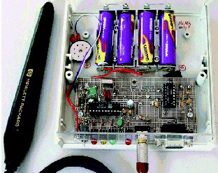

Figure 1:
This homebrew ISBN bar-code reader helped sort out our book collection. It omits many nuances that must appear in a commercial product: battery charger, manual, front panel, and quick-install guide.
Back to Article